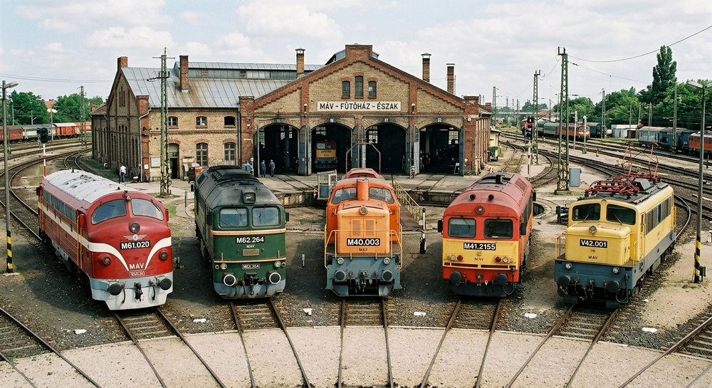
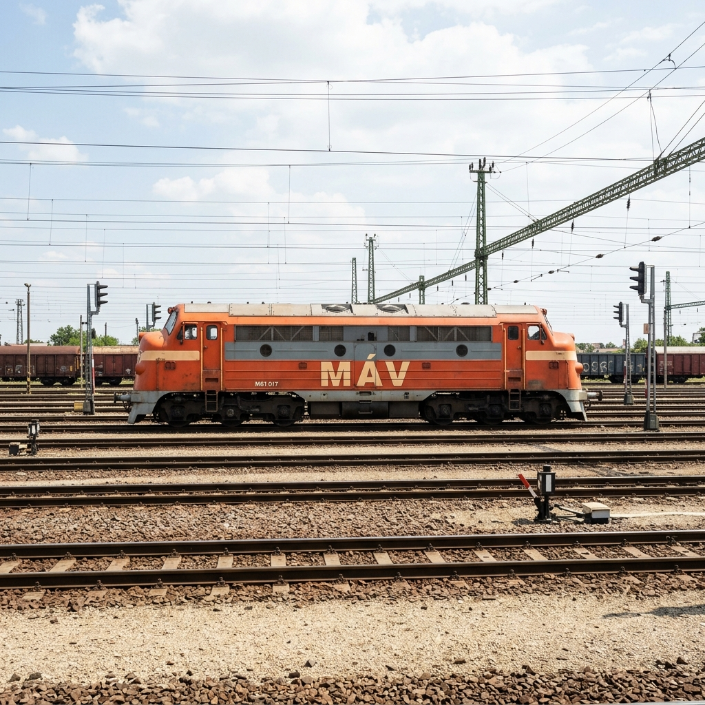
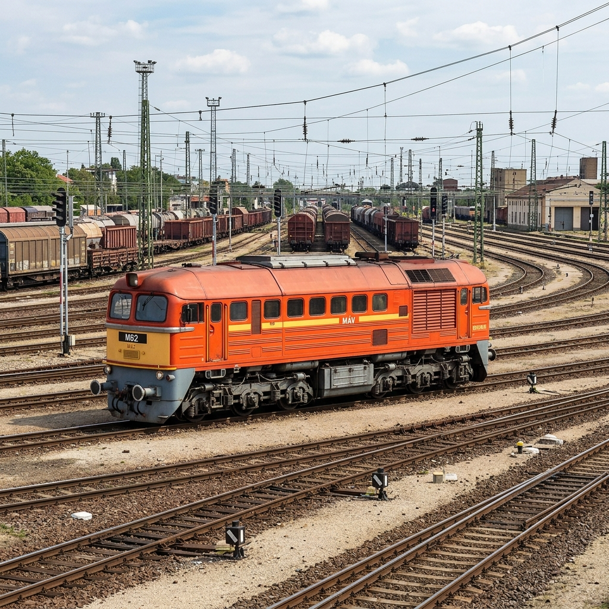
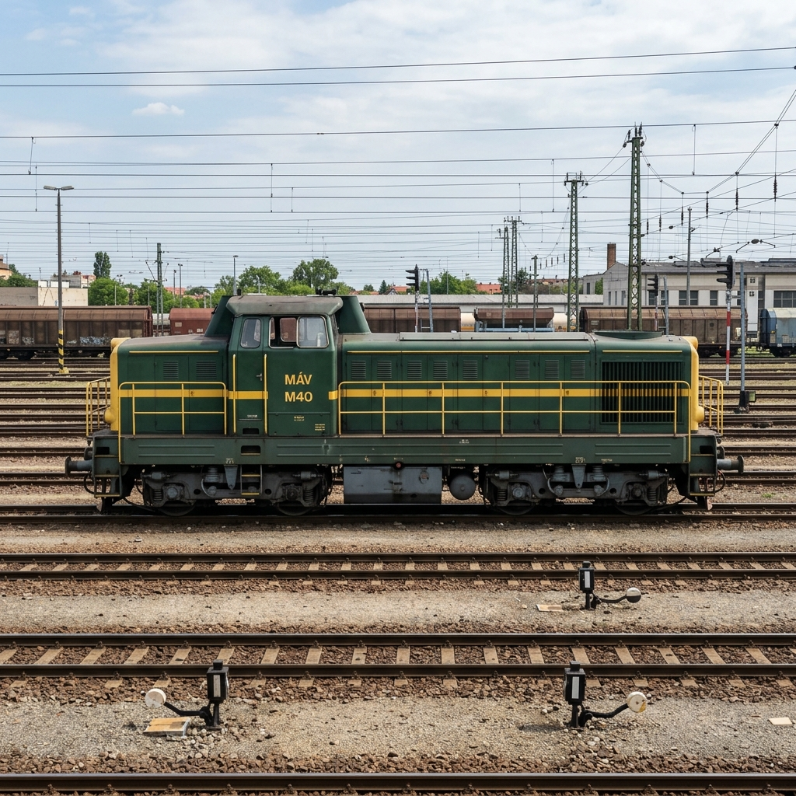
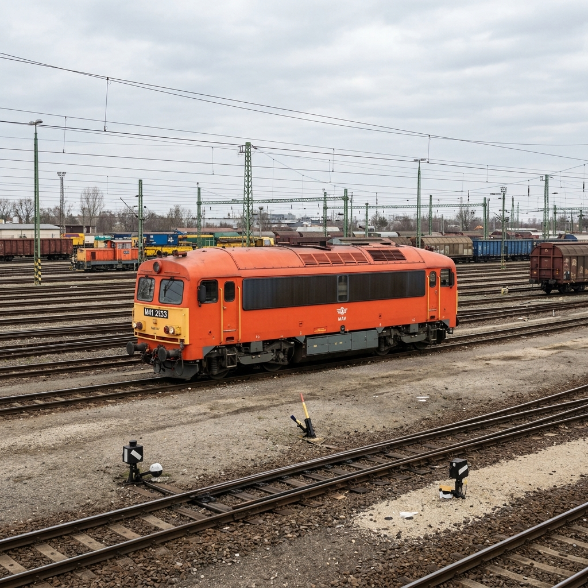
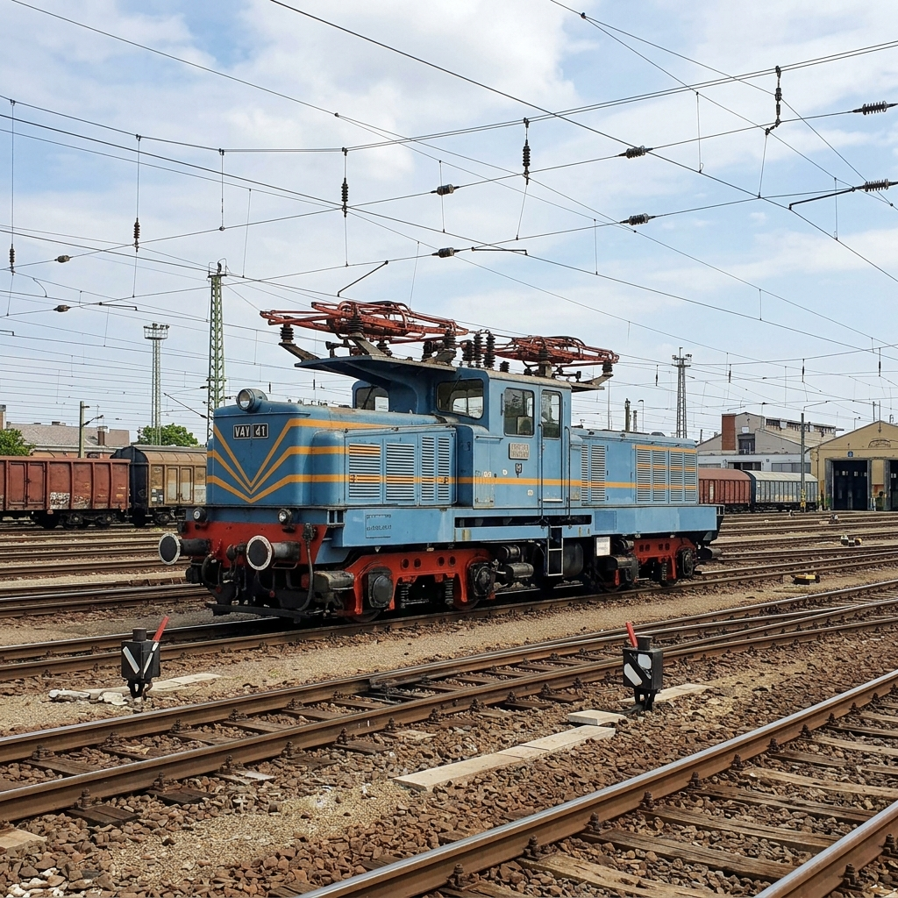

A magyar vasút történetének elválaszthatatlan részei azok a legendás dízel- és villamosmozdonyok, amelyek évtizedeken át határozták meg az ország fővonalainak és rendező-pályaudvarainak arculatát. A hazai vasútbarátok körében kultikus tisztelet övezi ezeket a retró gépeket:

Figyelem! Ez az oldal MI által generált tartalomat használ.
A svéd NOHAB gyár által készített M61-es sorozatú dízelmozdonyok a magyar vasúttörténet legmeghatározóbb kultikus járművei közé tartoznak. Magyarország az 1960-as évek elején vásárolt húsz darabot ebből a típusból, ami a hidegháborús időkben óriási politikai és gazdasági ritkaságnak számított. A mozdonyok szívét egy amerikai fejlesztésű, General Motors gyártmányú, tizenhat hengeres kétütemű dízelmotor alkotja. Ez a technológia rendkívül megbízhatóvá és üzembiztossá tette őket a hazai hálózaton. A külsejük azonnal felismerhetővé tette őket. Jellegzetes, áramvonalas és gömbölyded „orruk” van. Hangos dübörgésük már messziről hallható volt. Pályafutásuk során a legfontosabb belföldi és nemzetközi expresszvonatokat továbbították a hazai síneken. A Balaton északi partjának jelképévé váltak. Az utasok és a vasutasok egyaránt rajongtak értük a kényelmes futásuk és a magas presztízsük miatt. A politikai vezetés azonban a szovjet importot előnyben részesítve nem engedélyezte további példányok beszerzését. Ennek ellenére a meglévő húsz gép hihetetlenül magas üzemkészséggel dolgozott egészen a ezredfordulóig. A forgalomból végül 2000-ben vonták ki. A vasútbarátok azóta is óriási kultuszt ápolnak a típus körül, és rendszeres találkozókat szerveznek a tiszteletükre. Ma több példányuk nosztalgiajáratként közlekedik. Ezek a csodás gépek ma is élnek. Minden vasútbarát ismeri a híres Nohabot.
A szovjet gyártmányú M62-es sorozat, közismertebb nevén a „Szergej”, a magyar vasút nehéz teherszállításának abszolút uralkodója volt. A luganszki gyárból érkező első példányok 1965-ben álltak szolgálatba, hogy kiváltsák a gőzvontatást a legnehezebb vonalakon. A mozdony egy hatalmas, kétütemű, tizenkét hengeres dízelmotorral van felszerelve, amely óriási vonóerőt biztosít. Ez a gép egy igazi szovjet monstrum. Ez a nyers erő tette lehetővé, hogy a legsúlyosabb szén- és ércszállító szerelvényeket is könnyedén mozgassa. A jármű teljesen nélkülözi az áramvonalas finomságokat, külső megjelenése robusztus, szögletes és tekintélyt parancsoló. A mozdony hatalmas fekete füstöt eregetett. Leginkább a semmivel össze nem téveszthető, fülsiketítően mély motorhangjáról vált híressé. Az eredeti verziókban egyáltalán nem volt beépített vonatfűtő berendezés, így télen csak tehervonatokhoz használhatták őket. Később a fűtés hiányát külön kazánkocsik csatolásával oldották meg a hideg hónapokban. Rendkívül strapabíró és igénytelen szerkezetek voltak. A Magyar Államvasutak összesen csaknem háromszáz darabot vásárolt ebből a típusból. A teherforgalom visszaesésével számuk gyorsan csökkent. Ennek ellenére a típus nem tűnt el teljesen a hazai hálózatról. Néhány korszerűsített példány ma is dolgozik. A vasútbarátok körében a gép nyers ereje miatt igazi ikonnak számít. A Szergej a nehézvontatás kitörölhetetlen jelképe.
Figyelem! Ez az oldal MI által generált tartalomat használ.
Az M40-es sorozatszámú, magyar fejlesztésű dízelmozdony a hazai vasúti gépgyártás egyik legkarakteresebb és legszerethetőbb terméke. A Ganz-MÁVAG gyárban tervezett és épített járműveket az 1960-as évek közepén kezdték el szállítani a MÁV részére. A mozdony egy nagyon egyedi formát kapott. Ez a név onnan ered, hogy a vezetőfülke a mozdonytest közepén helyezkedik el. Mögötte pedig a magasabb gőzkazán burkolata emelkedik ki a tetőből. Emiatt kapta a híres Púpos becenevet. Ezt a kialakítást azért választották, hogy a mozdonyvezetők mindkét irányba viszonylag jó kilátást kapjanak. A gépekbe egy tizenkét hengeres, négyütemű Ganz-Jendrassik dízelmotort építettek be a mérnökök. A mozdonyvezetők nagyon szerették ezt a típust. Elsősorban a közepes terhelésű személyszállító vonatok és a gyorsvonatok továbbítására szánták őket. Emellett a nehezebb tolatási feladatok ellátásában is kiválóan megállták a helyüket az évtizedek során. Megbízható működésük miatt hamar népszerűvé váltak. A villamosítás terjedésével fokozatosan szorultak vissza a mellékvonalakra. A kilencvenes évekre szerepük teljesen minimális lett. Nagyon kevés működőképes példány maradt meg belőlük az utókor számára. Manapság igazi ünnepnek számít egy Púpos. A magyar vasúti formatervezés egyik legszebb és legkedvesebb emlékeként tekintünk rájuk.
Az M41-es sorozatú dízelmozdonyok a magyar nem villamosított vasútvonalak mindennapjainak abszolút meghatározó szereplői. A Ganz-MÁVAG által az 1970-es évektől gyártott gépek a belföldi személyszállítás gerincét alkották vidéken. A jármű a jellegzetes hangjáról kapta nevét. Ez a csörgő-zakatoló hang évtizedeken át hozzátartozott a vidéki vasútállomások hamisítatlan hangulatához. A tervezők egy francia licenc alapján készült, tizenkét hengeres dízelmotorral szerelték fel a járműveket. Ez a gép beépített generátorral fűtött. Ez a technikai újítás feleslegessé tette a külön fűtőkocsik használatát a téli személyszállító vonatoknál. A Csörgők szinte minden olyan vonalon megfordultak, ahol nem volt kiépítve a felsővezeték-hálózat. Nagyon fontos szerepet játszottak a vidéki közlekedésben. Bár a motorjuk hajlamos volt a túlmelegedésre, a vasutasok megtanulták együtt élni a hibáikkal. Az ezredforduló után sok példányt modernizáltak az üzemekben. Új és csendesebb Caterpillar motorokat kaptak. A vasútbarátok az eredeti, klasszikus hangú gépeket szeretik jobban. Néhány példány még ma is aktívan dolgozik. A magyar utazóközönség jól ismeri ezt a típust. Ez a vonat jelenti a hamisítatlan vidéki utazást.
A V41-es és V42-es sorozatú villanymozdonyok, vagyis a „Leók”, a magyar villamos vontatás hajnalának úttörő járművei. Ezeket a gépeket az 1950-es és 1960-as években gyártotta a Ganz és a Klement Gottwald Villamossági Gyár. Különleges működési elvük miatt kapták a becenevüket. Ez a bonyolult Ward Leonard-rendszer tette lehetővé, hogy a váltakozó áramot egyenárammá alakítsák. Külsőre a mozdonyok kifejezetten egyediek voltak. Kezdetben a Budapest–hegyeshalmi fővonal villamosítása során kaptak óriási szerepet a forgalomban. Később a miskolci és a nyíregyházi vonalak villamosítása után ott is megjelentek a vonatok élén. Teljesítményük a későbbi mozdonyokhoz képest csekély volt. A bonyolult belső gépezet miatt a karbantartásuk és javításuk komoly szakértelmet igényelt. Az 1960-as évek közepén megjelenő Szili mozdonyok gyorsan háttérbe szorították őket a fővonalakon. Ezt követően a Leókat fokozatosan tolatási feladatokra és könnyebb helyi tehervonatok továbbítására fokozták le. A forgalomból a kilencvenes években vonták ki. Ma már csak egy-egy példány emlékeztet minket erre a technikai különlegességre. Ma már csak múzeumokban láthatóak ezek. A Leó mozdonyok a korai villamosítási törekvések felejthetetlen mementói.
Figyelem! Ez az oldal MI által generált tartalomat használ.




